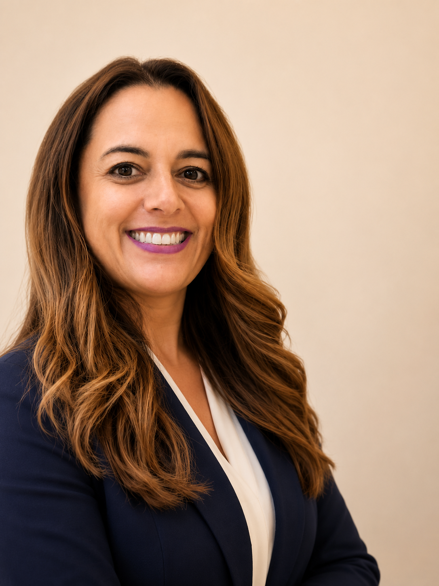

Você é competente — isso nunca foi o problema. O que trava é não conseguir ver com clareza as dinâmicas invisíveis — políticas, critérios não ditos, expectativas — de onde você está, seja pra subir na carreira, liderar de um jeito mais humano ou escolher uma nova direção. Com visão do todo — profissional e pessoal — você sai da trava com um plano concreto: o que vale, pra onde vai, e qual o próximo passo.
Agende uma conversa gratuita Conheça meu trabalho
Sou Verginia Duran — executiva de RH, mentora e coach. Construí minha carreira dentro de grandes organizações globais, do operacional ao estratégico, no Brasil, México, Estados Unidos e Portugal. Fiz uma transição de coragem: sabático, mestrado em Inovação e Liderança em Lisboa, e a co-fundação de uma consultoria de capital humano. Hoje acompanho profissionais e líderes em suas jornadas — com repertório real, embasamento e visão do todo.
Diagnóstico completo — profissional e pessoal — seguido de estratégia e plano de ação com começo, meio e fim.
Profissionais que precisam tomar decisões grandes e querem um espaço seguro para pensar com profundidade.
Para líderes que precisam engajar pessoas, sustentar conversas difíceis e entregar resultados — sem perder a própria essência. Pessoas se engajam quando se sentem vistas, respeitadas e seguras.
Escolher uma nova direção com clareza, reconhecimento do próprio valor e desenvolver um plano concreto.
Para profissionais que querem ser percebidos com mais autoridade, influência e credibilidade — tanto internamente quanto no mercado.
Ninguém consegue enxergar com clareza o sistema em que está imerso — e isso vale também para o próprio comportamento. Por isso, todo processo começa com o Assessment DISC: um mapeamento do seu perfil comportamental que revela como você decide, comunica, lidera e reage sob pressão. Você passa a se ver como o mercado te vê — e é dessa consciência que nasce a estratégia.
Nada de processo aberto que se arrasta. Você sabe exatamente onde está, para onde vai e quando termina.
Apresentações pessoais, informações sobre o processo e esclarecimento de dúvidas. Incluída em todos os pacotes.
Mapeamento completo do momento, perfil comportamental (DISC) e direção inicial.
Definição de opções, desbloqueio de travas e construção de posicionamento.
Plano de ação com métricas claras e autonomia para seguir.
Acompanhamento de sustentabilidade após o término. Exclusivo para programas de 8 sessões ou mais.
Você pode passar anos tentando sozinho — ou encurtar o caminho com alguém que sabe fazer essas perguntas.
Assessment DISC com devolutiva individual de 1h30: levantamento e análise do seu perfil comportamental, estilos e competências — elucidando pontos fortes e a desenvolver.
Quero me conhecer melhor Conversa gratuita de 30 min3 sessões de mentoring individual + Assessment DISC com devolutiva completa: levantamento e análise do seu perfil comportamental, estilos e competências — elucidando pontos fortes e a desenvolver. Para quem quer se aprofundar no próprio perfil e enxergar oportunidades.
Quero começar Conversa gratuita de 30 minO programa principal: 8 sessões com começo, meio e fim — diagnóstico, estratégia e execução — para desafios como transição de carreira, liderança e próximos movimentos. Inclui Assessment DISC com devolutiva, sessão de empatia gratuita no início e check-point de acompanhamento 30 dias após o processo.
Programa para desenvolvimento de lideranças — com assessment e avaliação 360. Para organizações que querem líderes preparados para a complexidade atual.
A Verginia foi incrível e nossa sinergia aconteceu desde o primeiro contato pelo telefone. Vi nela a minha versão complementar. Sem palavras para agradecer por todo o comprometimento dela em me ajudar nessa mentoria. Consegui enxergar coisas que em minha zona de conforto não eram claras para mim. Serei eternamente grata a ela e a este maravilhoso e transformador programa!
A abordagem empática e o ambiente seguro proporcionado durante as sessões me permitiram explorar minhas metas e desafios de forma aberta e honesta. Como observação, estou comprometido em seguir minha vida com todo o autoconhecimento adquirido e sempre buscar minha felicidade. Agradeço profundamente à minha coach pela orientação e apoio ao longo desta jornada transformadora.
Verginia, é muito bom ter você olhando para mim e me pontuando de conhecer o meu potencial, é muito bom para que eu cresça como pessoa e tenha esse desenvolvimento. Você me fez lembrar de meu potencial, do meu valor que eu não olhava assim. Tenho muito a agradecer, ter sua presença, seu carinho e sua atenção, foi muito especial para mim.
Comece com uma Sessão de Clareza Estratégica gratuita de 30 minutos. Sem compromisso — você sai com mais clareza do que entrou.
Agendar uma sessão gratuita